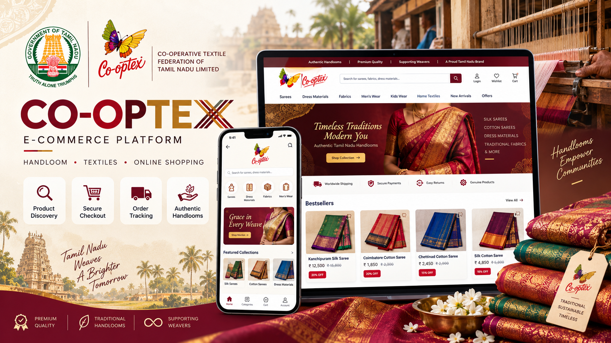
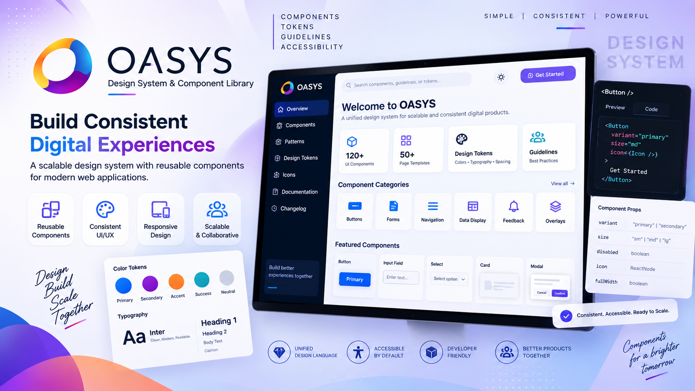
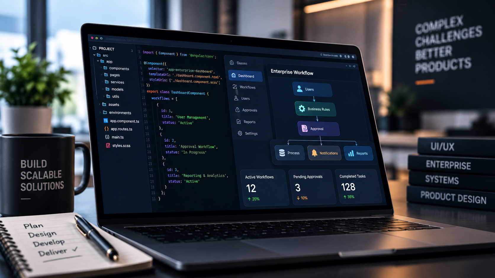
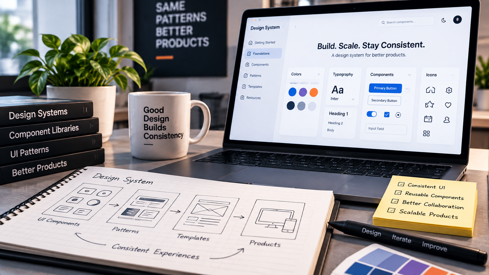
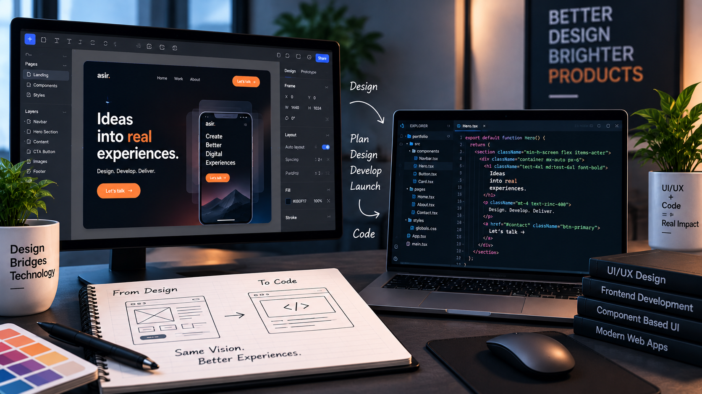

UI/UX Design
User-centred design for enterprise and government applications, from user flows and wireframes to high-fidelity interfaces and responsive experiences.
Senior UI/UX Designer · UI Developer
Senior UI/UX Designer and UI Developer with 7.5+ years of experience . I design enterprise applications, government platforms, responsive web products and scalable design systems with a focus on clarity, usability and consistent digital experiences.
34+
Projects done
21+
Happy clients
7.5+
Years of experience
What I do
User-centred design for enterprise and government applications, from user flows and wireframes to high-fidelity interfaces and responsive experiences.
Responsive UI implementation using HTML5, CSS3, Bootstrap and Angular-based interfaces, with close collaboration between design and development teams.
Reusable components, design patterns and consistent UI foundations that improve scalability, accessibility and visual consistency across products and modules.
Portfolio

Designed and refined user interfaces and end-to-end workflows for government
enterprise systems supporting the U.P. Excise Department. The work focused on
simplifying complex administrative processes through clear information architecture,
task-oriented workflows, structured dashboards, responsive layouts, and reusable UI
patterns.
Particular attention was given to usability, accessibility, information hierarchy,
and consistency across multiple modules. Common patterns for navigation, forms, data
presentation, status information, and recurring interactions helped establish a
unified and scalable experience across the system.
The project focused on creating a structured UI foundation capable of supporting
complex administrative workflows while providing a consistent experience for future
enhancements.

Designed clear and task-focused interfaces for the Tamil Nadu Public Distribution System, simplifying complex public-service workflows through structured layouts, responsive design and consistent interaction patterns.
View case study →Designed a user-friendly travel booking experience with clear information architecture, intuitive booking flows and responsive interfaces across the platform.
View case study →
Designed connected customer-facing and retail operational experiences across Co-optex e-commerce and the Infotex POS interface, covering product discovery, transactions, inventory, customer workflows and reporting.
View case study →
Designed and maintained a reusable design system and component library to support consistent, scalable interfaces and closer collaboration across digital products and modules.
View case study →About me
I'm a Senior UI/UX Designer with 7+ years of experience designing digital products, enterprise applications, and large-scale platforms. My work focuses on transforming complex requirements into clear, intuitive, and scalable user experiences.
My experience spans enterprise and government systems, responsive web applications, e-commerce and travel platforms, design systems, and UI development. I work across the design process from understanding requirements and structuring workflows to creating high-fidelity interfaces and collaborating closely with development teams.
I also bring hands-on experience with HTML, CSS, Bootstrap, JavaScript, and Angular-based UI development, allowing me to understand both design and implementation. This helps me create interfaces that are not only visually consistent, but also practical, responsive, accessible, and ready for development.
Stack & tools
My Approach
"Designing clear, task-focused experiences for complex enterprise and government workflows, with a strong focus on usability, information hierarchy and practical user journeys."
"Creating reusable components, patterns and UI foundations that improve consistency, scalability and collaboration across products and modules."
"Translating design concepts into responsive and accessible interfaces with hands-on knowledge of HTML, CSS, Bootstrap, JavaScript and Angular."
Design Thoughts

Complex systems need more than attractive interfaces. Clear information architecture, structured workflows, meaningful hierarchy, and predictable interactions can make information-heavy products easier to understand and use.
Read more →
A strong design system creates a shared foundation for products and teams. Reusable components, clear patterns, and consistent standards help designers and developers build interfaces with greater clarity and scalability.
Read more →
Understanding how interfaces are built helps create more practical designs. Knowledge of HTML, CSS, Bootstrap, JavaScript, and Angular supports closer collaboration between design and development and helps turn concepts into responsive interfaces.
Read more →Get in touch
Have a project, product, or opportunity in mind? I'm open to discussing UI/UX design, enterprise applications, design systems, and UI development opportunities.